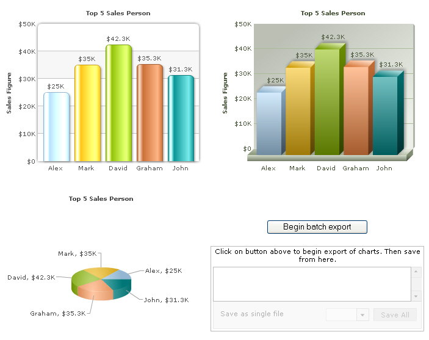
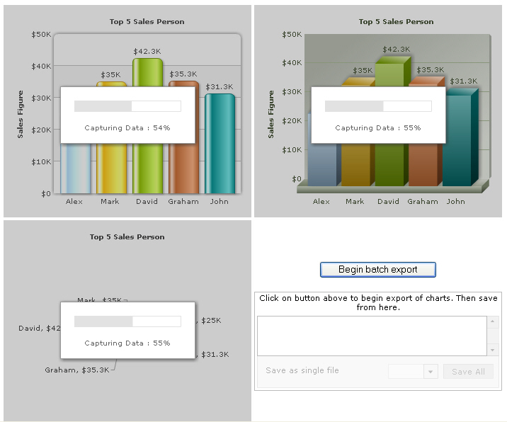
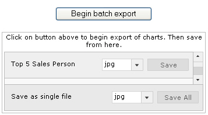
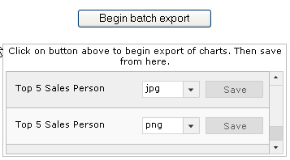
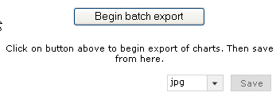
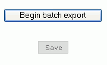

Exporting Charts as PDF or Images > Batch export > Setting it up |
Here, we'll cover examples for setting up batch exporting of charts. We'll first start with the simplest example and then move ahead by configuring various parameters. Before you start, you'll need to follow these steps:
With that done, our next few steps are:
Let's see how to implement each of them in details. |
| Configuring XML for client-side export |
In the XML of each chart that you need to export, you need to do three things:
The following XML snippet shows how to attain these: |
<chart yAxisName='Sales Figure' caption='Top 5 Sales Person' numberPrefix='$' useRoundEdges='1' bgColor='FFFFFF,FFFFFF' showBorder='0' exportEnabled='1' exportAtClient='1' exportHandler='fcBatchExporter'> |
| We now create 3 charts in our page - Column2D, Column3D and Pie3D. All these charts, for the sake of example, use the same XML. |
<div id="chart1div" align="center">The chart will appear within this DIV. This text will be replaced by the chart.</div> <div id="chart2div" align="center">The chart will appear within this DIV. This text will be replaced by the chart.</div> <div id="chart3div" align="center">The chart will appear within this DIV. This text will be replaced by the chart.</div> |
| Note that all the charts have registerWithJS set to 1 and their DOM IDs are myChartId1, myChartId2 and myChartId3 respectively. The next step is to add the exporter component to the page. |
| Creating instance of Export Component in your web page |
The instance of the export component can be created in your web page easily using our FusionChartsExportComponent JavaScript class. So, you first need to include the JavaScript class in your page as under. Make sure to include this page after FusionCharts.js, as this class references some of the objects defined in FusionCharts.js. This order of inclusion is important. |
| <head> <script language="JavaScript" src="../../FusionCharts/FusionCharts.js"></script> <script language="JavaScript" src="../../FusionCharts/FusionChartsExportComponent.js"></script> </head> |
| Now, using this class, you need to create an instance of this component in your page. For that, you first define an empty DIV and name it, as shown under: |
| <!-- We also create a DIV to contain the FusionCharts client-side exporter component --> <div id="fcexpDiv" align="center">FusionCharts Export Handler Component</div> |
As you can see above, the DIV has been named as fcexpDiv. Note that you can place this DIV anywhere in your page - it's not necessary to place it beside the chart. However, since the UI of this export component shows a button for initiating export, it's better to place it somewhere near the chart so that your users can recognize it. Next, you create an instance of the export component in your page using the following JavaScript code: |
<script type="text/javascript"> |
Here, we first create an instance of FusionChartsExportObject, which is the JavaScript class representation of FusionCharts Export Component. To this, we specify the DOM-Id of this export component instance - fcExporter1 in this case. We also specify the location of the component SWF file as second parameter. Next, we need to convey the list of charts that we intend to add to the batch. This is done by specifying all such DOM Ids of the charts in an array. This allows you to selectively configure the charts you want to add to your queue. Or, if you need to instantiate multiple batch exports, each with a different combination of charts, you can do so. |
| //Add the charts to queue. The charts are referred to by their DOM Id. myExportComponent.sourceCharts = ['myChartId1','myChartId2','myChartId3']; |
| After this, we configure the export component UI to show in full mode, allow saving of output as individual or single file and to allow user to select the saving format. This is done using the following code: |
| //Set the mode as full mode myExportComponent.componentAttributes.fullMode='1'; //Set saving mode as both. This allows users to download individual charts/ as well as download all charts as a single file. myExportComponent.componentAttributes.saveMode='both'; //Show allowed export format drop-down myExportComponent.componentAttributes.showAllowedTypes = '1'; |
| We also set the cosmetic attributes of UI. |
| //Width and height myExportComponent.componentAttributes.width = '350'; myExportComponent.componentAttributes.height = '140'; //Message - caption of export component myExportComponent.componentAttributes.showMessage = '1'; myExportComponent.componentAttributes.message = 'Click on button above to begin export of charts. Then save from here.'; |
| Finally, we call the Render method of the class with our DIV id as parameter. This generates an instance of the exporter component in the specified DIV at run-time. |
| //Render the exporter SWF in our DIV fcexpDiv myExportComponent.Render("fcexpDiv"); |
| Now, all we need to do is invoke the BeginExport() API of batch method. |
| Invoking BeginExport method |
| We place a button in our page, which when clicked invokes this. The code is shown under: |
//Define a function, which will be invoked when user clicks the batch-export-initiate button ... <input type='button' onClick="javascript:initiateExport();" value="Begin batch export" /> |
The final code of the page looks as under: |
<html> <div id="chart2div" align="center">The chart will appear within this DIV. This text will be replaced by the chart.</div> <div id="chart3div" align="center">The chart will appear within this DIV. This text will be replaced by the chart.</div> <input type='button' onClick="javascript:initiateExport();" value="Begin batch export" /> <div id="fcexpDiv" align="center">FusionCharts Export Handler Component</div></td> |
| When you now fire up your HTML page, you'll see a screen as under. As you can see, the batch export component is present along with the charts, waiting for the user to initiate batch process. |
|  |
| Once the button is clicked, all charts enter capture phase as shown below: |
|  |
| Finally, when the charts have been exported to Export Component, it gets populated, as under. The charts exported can either be individually saved from this, or all charts can be saved as a single file (by clicking on Save All) button. |
|  |
If you do not wish to allow export of all the charts as a single file, you can just set: myExportComponent.componentAttributes.saveMode='individual'; This will result in the image below. Note that the "Save-All" panel at the bottom of export component is missing now. |
|  |
Or, if you do not want the user to be able to save individual files, you can set this to: myExportComponent.componentAttributes.saveMode='batch'; This will result as under. Note that you can no longer save individual charts. All the chart export output get compiled in a single file, for which you can choose a saving format. |
|  |
In batch mode, the output file name is named as FusionCharts by default (extension depending on what format the user selected). To specify your own file name, you can set the following in JavaScript. myExportComponent.componentAttributes.defaultExportFileName = 'MyCharts'; The exportFileName attribute would NOT work in batch export, as that file name is chart specific. The above line collectively specifies a name for all the charts in the batch - when exported as a single file in batch mode. Similarly, if you want to specify a default export format (JPG, PNG or PDF), and hide the combo box (to select formats), you can set: myExportComponent.componentAttributes.defaultExportFormat='PDF'; This results in a single button being shown, which when clicked downloads a single PDF file containing all the charts in batch. |
|  |
| Customizing the Export Component UI |
| The export component offers extensive UI customization options. Here, we'll see some of the basic configuration options. The entire list can be found in the section Component UI Customization. Consider the code below: |
<!-- We also create a DIV to contain the FusionCharts client-side exporter component --> //Add the charts to queue. The charts are referred to by their DOM Id. |
| In this example, we've customized font properties, color properties and titles. You can also customize scroll bar properties, combo-box properties, padding and margins. Refer to the section Client-side Exporting > Component UI Customization to get an idea of the same. |